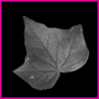

Contact
There are a few ways to contact me, but these are probably the fastest ways to do so.
I'm an IRC junkie, and I can be found on a few networks. My most active networks include ZomgIRC and OFTC. I use the nick Perihelion on both, but on ZomgIRC I am often on the nick zomg or Amanda.
I also use Twitter - feel free to follow me!
You can also leave comments on my blog. Comments are moderated, so just tell me you were on my home page and leave some contact information. I promise I won't post it for the internet to see!